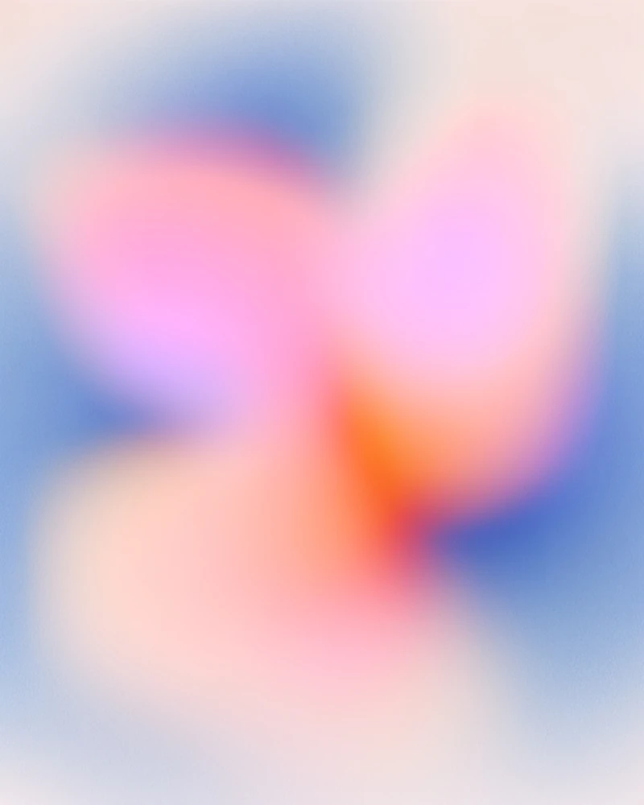
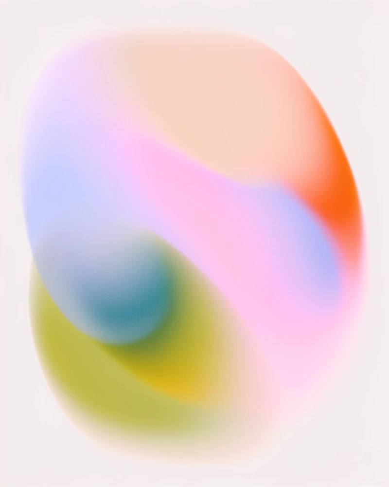
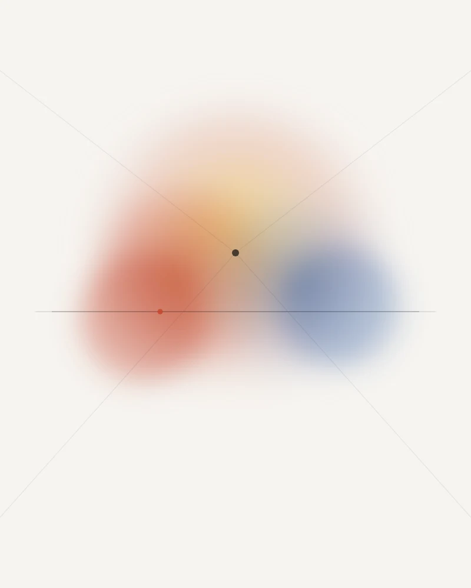
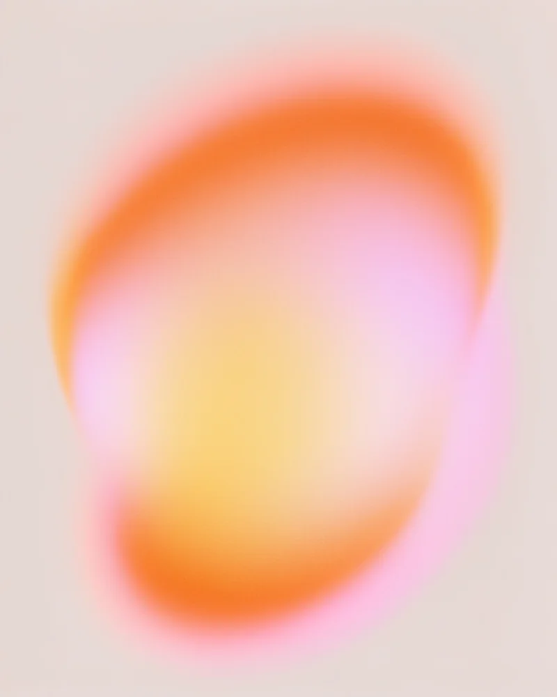

Inspired by Magazine

Els científics que van morir de gana al costat de les llavors
Durant el setge de Leningrad, els botànics de l'institut de Vavílov van custodiar la seva gran col·lecció de llavors mentre morien de gana. Què hi ha de cert en la història, i què en queda avui a Svalbard.

La llengua que va néixer en un pati de Managua
Entre finals dels setanta i principis dels vuitanta, infants, adolescents i joves sords de Managua van fer néixer una llengua de signes nova a partir dels signes de casa. Què ens explica sobre el llenguatge i sobre ser sord.

Qui va dibuixar el mapa d'Haití?
El 2010, Port-au-Prince gairebé no tenia mapa. En un mes, sis-centes persones de tot el món el van dibuixar des de casa. De la Missió 4636 a Galaxy Zoo i el konbit: com treballen junts milers de desconeguts.

El sobre que ningú no pot obrir
Cada missatge de WhatsApp o Signal viatja tancat amb una clau que no té ni l'empresa que el porta. Com funciona el xifrat d'extrem a extrem, fins on és segur i què diu de nosaltres saber callar.

L'últim sopar de Leonardo
Tretze homes asseguts en filera, estovalles de lli, gots de vidre i anguiles amb taronja. Gairebé res del mural més famós del món no encaixa amb la Jerusalem del segle I — ni amb un sol evangeli.

Per què van aixecar Stonehenge?
Cap druida no hi va posar un peu, la festa gran era a l'hivern i les pedres van viatjar fins a 750 km. L'arqueologia recent revela un cementiri neolític, un pacte d'illa i un mirall de cada època.

El viatge de la pizza
Un pa pla nascut abans de l'agricultura, un fruit andí que Europa va témer com a verí i una búfala de l'Índia. Com el pa de carrer de Nàpols va conquerir tot el planeta.

Per què riem?
Riem trenta cops més acompanyats que sols, i gairebé mai per un acudit. Dels duels inuit als grans simis: quan un reflex animal esdevé pacte i tribunal.

Per què dormim?
El dormitori solitari és una raresa històrica. De les fregates que dormen volant a les fogueres del Kalahari i l'inemuri japonès: com modela cada cultura el son.

Qui era realment Jesús?
No es deia Jesús, va néixer uns anys «abans de Crist» i cap text antic no descriu la seva cara. Què en sap la història, com l'ha pintat cada cultura i com el veuen les altres religions.

Jesús no va escriure res
Jesús no va deixar cap llibre. Unes cartes, quatre relats i dues frases d'historiadors antics permeten seguir-ne el rastre.

El Niño i La Niña, les dues cares del Pacífic
Cada pocs anys, un tros del Pacífic s'escalfa uns quants graus, i un vaivé de vents i aigua porta pluges i sequeres a mig món.

Arribats a última hora
Si la història de l'univers durés un any, cada segon valdria 437 anys. Nosaltres hi apareixem el 31 de desembre al vespre.

De què mor el món: el cor, abans que la guerra
Entre el que temem i el que ens mata hi ha molta distància. Una de cada tres morts al món és cardiovascular; el càncer és la segona causa.

La migració més gran de la Terra passa cada nit
El 1942, un sonar de l'armada nord-americana va trobar un fons marí on no n'hi havia cap. Era una capa d'animals que puja i baixa amb la llum del sol.

La guerra entre virus i bacteris
En cada gota de mar, centenars de milers de virus ataquen bacteris que es defensen sense treva. D'aquesta guerra invisible, la ciència en va treure el CRISPR.

La pols del Sàhara alimenta l'Amazònia
El vent s'endú cada any milions de tones de pols del Sàhara fins a Amèrica. Una part cau sobre l'Amazònia i li porta el fòsfor que la pluja s'emporta.

La cinta transportadora de l'Atlàntic
Benjamin Franklin ja en va veure la meitat visible, el corrent del Golf. L'altra meitat torna pel fons del mar, i l'aigua pot trigar segles a tornar a la superfície.

On va el CO₂ que emetem
Cada any aboquem a l'aire més de 40.000 milions de tones de CO₂, però menys de la meitat s'hi queda. Seguim la resta fins al fons del mar i les fulles dels boscos.